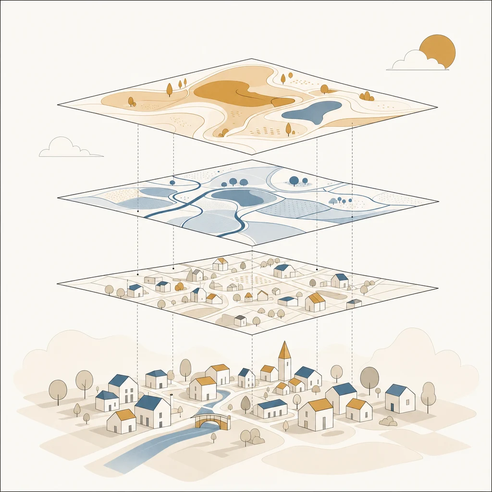

01
接点が増えた
顧客対応、対話AI、学習支援、医療介護、公共の窓口。人の気持ちが関わる業務の多くがデジタルのやり取りに移り、感情を扱える範囲がそのまま広がりました。
Affectosphere
感情は個人の内面にとどまらず、社会を満たす環境になりました。その環境を Affectosphere（情動圏）と呼び、これを測り、活かす層を私たちの事業領域としています。
01 — Affectosphere
感情は、個人の内面を超えて、言葉・声・行動として社会のあらゆる場所にあふれました。SNS、対話AI、音声、行動ログ：やり取りの大半がデジタルに移り、感情の痕跡が社会に満ちています。
感情は、個人の属性から社会を満たす環境へと変わりました。私たちはこの環境を Affectosphere（情動圏） と呼び、これを測り、理解し、活かす層を事業領域としています。

02 — The Story
SNS・対話・音声・行動……感情のデータが社会を満たす。けれど、まだ正しく測られ・活かされていない。
感情は曖昧で割れる。だから確率分布と不確実性のまま測り、理解し、表現し、活かす技術が要る。
現場ごとに感情が活きることで、見落としが減り、対話が噛み合い、人の暮らしと社会がより良くなる。
03 — Structure
情動圏を感情AIが測り、理解し、活かすことで、暮らしが最適化される。そしてより良い暮らしが、ふたたび情動圏を豊かにします。
Environment
Affectosphere ／ 情動圏
感情が、社会のあらゆる場所を満たす環境になった
↓ 感情AIが、測り・理解し・活かす ↓
AC・CAI ／ 私たちの役割
曖昧さを保ったまま、感情を扱う
↓ 暮らしと事業へ ↓
Outcome
感情最適化された暮らし
対話・医療・教育・エンタメ・公共：あらゆる現場がより良くなる
↻ より良い暮らしが、ふたたび情動圏を豊かにする
04 — Market
感情を扱う技術が、いま事業として成り立つ条件がそろいました。理由は3つです。
01
顧客対応、対話AI、学習支援、医療介護、公共の窓口。人の気持ちが関わる業務の多くがデジタルのやり取りに移り、感情を扱える範囲がそのまま広がりました。
02
多タスク・多言語を一つで扱う基盤モデルと、不確実性を扱う手法が実用の域に入りました。領域ごとに専用モデルを作らずに届けられます。
03
感情データの扱いは社会的な論点です。較正された確率とプライバシー設計を示せるかどうかが、導入の判断を左右します。
感情AIの市場は、2024年の27.4億ドルから2030年に90.1億ドルへ成長すると見込まれています（MarketsandMarkets）。カメラ・マイクを備えたAIグラスの広がりで、文章以外から感情を読み取る環境も整いつつあります。
05 — Our Business
自社で最終サービスは作りません。他社のサービスや組織の「感情の部分」を担う形で、5つの活動を行います。
目的の整理 → 技術の選定・組み合わせ → 試作 → 評価 → 組み込み。文章に加えて、視線・映像・音声を用いた計測の研究開発も進めています。
多様な感情タスクを一つで扱う感情基盤モデル Affeline。研究用・非商用のライセンスで Hugging Face に公開しているほか、商用利用のライセンスとAPIの形でご提供します。
注釈者間の不一致の分析、受け取り方の割れが分かる感情データの作成と提供。お手元のデータの分析も承ります。
感情AIの判定の偏りや妥当性の検証、導入前の点検、企業・開発者向けの感情AI倫理教育。
メディア活動・書籍・セミナー、展示会での感情AIアートの展示。ここで得た認知と信頼を、技術のご相談につなげます。
06 — Pillars
01
感情は、社会のあらゆる場所を満たしている。
02
その感情を、曖昧さごと測り、理解する。
03
測って活かし、人の暮らしと社会をより良くする。